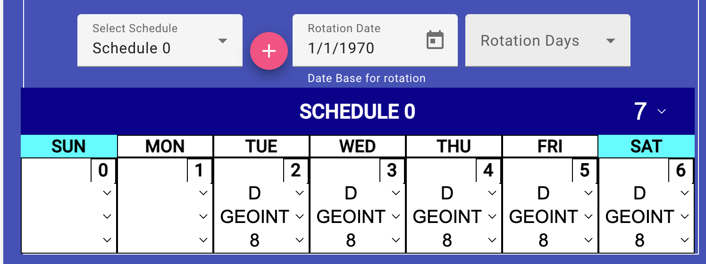

Editing Employee's Assignment List
(Site Scheduler/Leadership only)
An assignment is the normal work schedule for any employee between a period
of time. A variation is a temporary change to an assignment, so before and
after the variation period the employee will return to their current
assignment.
When you created a new employee, he/she was
automatically assigned to your site through the use of an assignment
record. During the New Employee process, you were asked when they
started, this will be the date of the first assignment. When an employee
is transfered to another site, within the contract, you will create a new
assignment record with the date they arrive there.
New Assignment
You will use a "New Assignment" whenever the
employee transfers to a different site, changes work assignment (shift
and/or workcenter). This allows the individual to continue to be assigned
in the schedule at their current work assignment, then the schedule will
smoothly transition to the new assignment.
- Click on the "Work Related" tab at the top of the view
- Click on the "Assignments" tab below the previous.
-
Select "New Assignment" in the "Select Assignment selector. You will be
presented with two fields below the selector
- Select their assigned workcenter.
- Click the calendar icon on the right of the "Assignment Start" field to
display a calendar, then choose the date the individual started/starts.
- Click the "Add" button to add the assignment. The assigment will be
added to the employee's record at this time and the display will change
to edit the employee.
Edit an Assignment
- Click on the "Work Related" tab at the top of the view
- Click on the "Assignments" tab below the previous.
-
Select the employees current assignment in the "Select Assignment selector.
- (if necessary) Select their assigned workcenter.
- (if necessary) Click the calendar icon on the right of the "Assignment Start" field to
display a calendar, then choose the date the individual started/starts.
- (if the individual is leaving the site and
the contract) Click the
calendar icon on the right of the "Assignement End Date" field to display
a calendar, then choose their last day of work on this assignment.
- Scheduling: The individual is normally assigned to a schedule period of
some multiple of 7 days (7, 14, 21, 28,...) and they may be assigned
multiple schedules that rotate every ? number of days (multiple of 7).
when the automatic schedule is created, it creates a single schedule
period of 7 days with the individual working Monday through Friday, day
shift.
- Add another schedule for rotation

- Click the "+" button next to the "Select Schedule" field. This
will create a second blank schedule of seven days, but not display it.
- Select "Schedule 1" or other schedule for editing.
- Click the calendar icon on the right of "Rotation Date" field to
set the base date for the rotation. Please use a Sunday as a base
date.
- Select the number of days to base the rotation on in the "Rotation
Days" field. You will be allowed to select 28 - 336 days.
-
To the right of the Schedule label (Dark blue), select the number of
days in the schedule. You can choose 7, 14, 21 or 28. It defaults to 7.
- The schedule days are numbered 0 to one less than the number of days
in the schedule. In each day: if day off, ensure all fields are blank,
for workday, select the shift, workcenter and humber of hours worked
on that day.
- Remove a schedule You can't remove
Schedule 0.
- Select the schedule you want to remove.
- Click on the red trash can icon to the left of the schedule label.
- You will be asked to confirm the deletion. Click "Yes" if you want
to continue.
- Change the schedule's period
- Select the schedule you want to change
- Select the number of days in the schedule in the field to the right
of the schedule label. You will be able to select 7, 14, 21 or 28 days.
- The schedule days are numbered 0 to one less than the number of days
in the schedule. In each day: if day off, ensure all fields are blank,
for workday, select the shift, workcenter and humber of hours worked
on that day.
- Adjust a single workday in the assignment
- If day off: ensure all fields in that day are empty/blank.
- If workday: Select the shift worked, workcenter and number of hours
to be worked on that day.
- (if applicable) Select the employee's primary work charge
numbers/extensions. Companies that don't have work charge numbers use
a different method of recording work performed based on workcenter and
year of work to replace the charge number/extension combination.
Updating Employee Company Info
Variation Editing